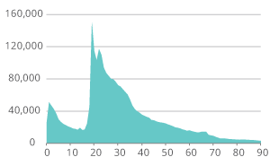

For a safer, faster, better experience online you should upgrade your browser. You will then be able to play with lovely interactive graphics such as this one.

3 million movers
There were an estimated 3 million internal migration moves to and from local authorities in England and Wales in the year ending June 2014, up 5.1% on the year ending June 2013. Internal migration is defined as any move within the UK that crosses a local authority boundary, including moves to and from Scotland and Northern Ireland.
The chart below shows that the peak age for internal migration was 19, the main age at which people leave home for study.
The movers and shakers
Some areas gain from net migration, others lose out. The map show areas which had a net gain in the year ending June 2014 (blue) or a net loss (grey).
Many local authorities in London have a net outflow, reflecting London's status as a region of high turnover: many people arriving (including international immigrants) but also many people moving out to other areas of the country.
There are also concentrations of net outflows in parts of northern England, the West Midlands and South Wales, while much of southern England (excluding London) saw a net inflow.
Explore!
Now this is the interesting part. When you close this introduction you'll be able to hover over every area and see the internal migration movements for every area in England and Wales. Where are people are moving to and from in your area?
The areas highlighted in red are the significant flows for the area - significant given the distribution of values for the area, using a method adapted from Holmes and Haggett (1977).
We've highlighted Brighton and Hove as an interesting case. You can see that a lot of the significant flows into Brighton and Hove are from London. However if you look at the outflows it is clear that this isn't reciprocated and a lot of people move to local areas such Adur, Worthing, Lewes and Mid-Sussex
For a safer, faster, better experience online you should upgrade your browser. You will then be able to play with lovely interactive graphics such as this one.